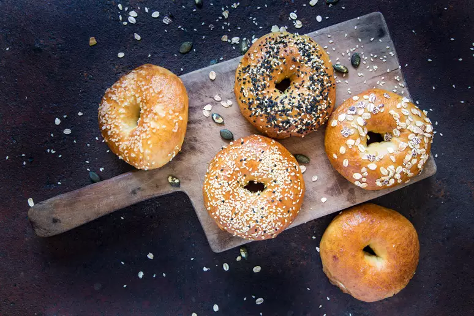
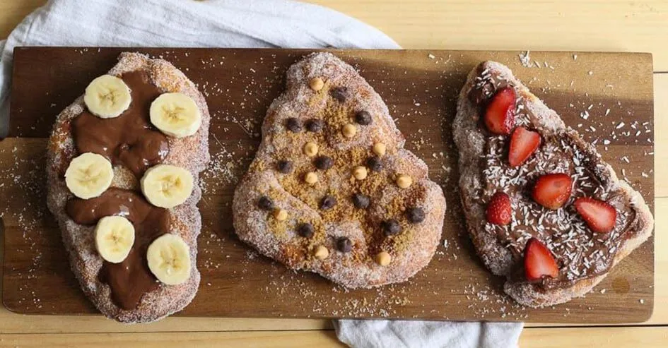
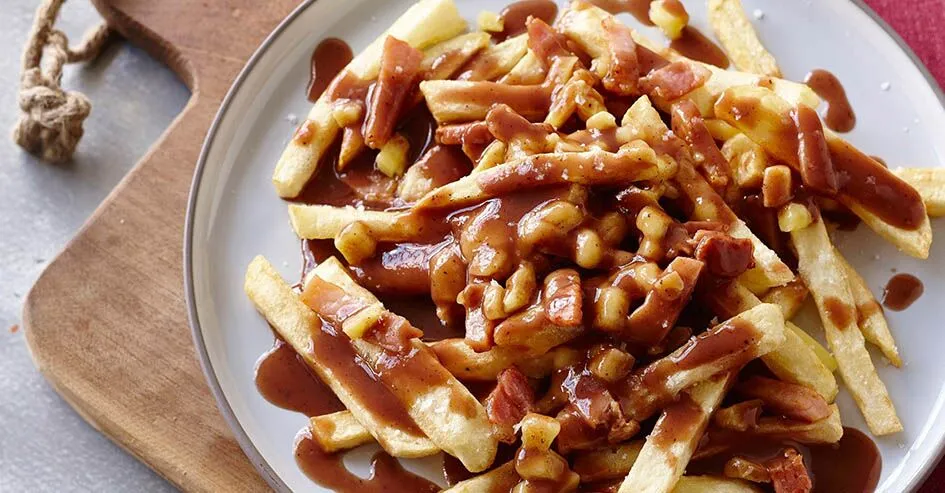
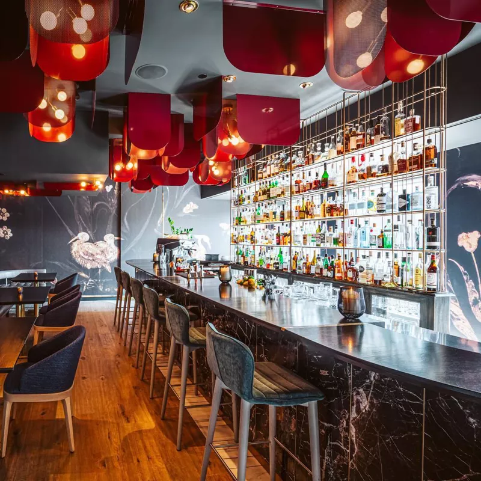
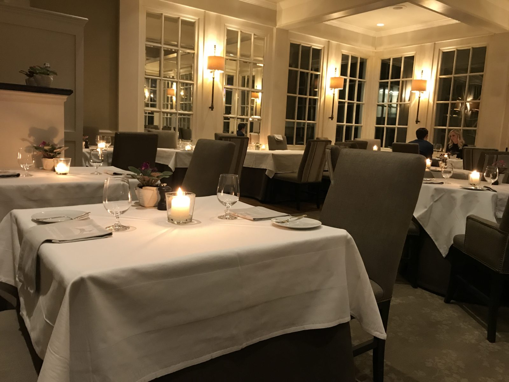
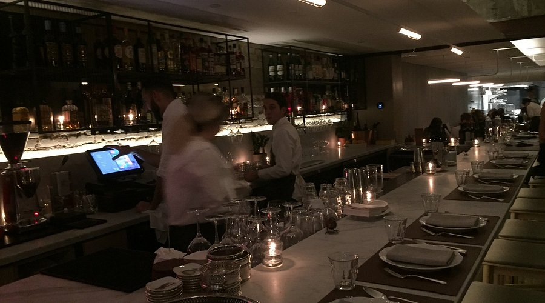

<!DOCTYPE html>
<html lang="pt-br">

<head>
<meta charset="UTF-8">
<title>Pratos Típicos do Canadá</title>
<link rel="stylesheet" href="style.css">
</head>

<body>

<script src="script.js"></script>

</body>
</html>

<header>
<nav>
  <a href="#inicio">Início</a>
  <a href="#pratos">Pratos típicos</a>
  <a href="#restaurantes">Restaurantes</a>
  <a href="#contato">Contato</a>
</nav>
</header>


<section id="inicio" class="inicio">

<h1>Culinária do Canadá</h1>


<p class="descrição">
A culinária canadense não é, nem de longe, uma das mais tradicionais. 
Podemos dizer que, devido ao mix cultural imenso que é o país, com comunidades e imigrantes de todos os lugares do mundo, 
é muito fácil encontrar restaurantes típicos de todos os países, inclusive do Brasil, nas maiores cidades.
</p>

</section>


<section id="pratos" class="comidas">
    <h1 class="titulo-comida">Pratos Típicos do Canadá</h1>

<div class="card">

<h2>Tourtière</h2>


<p>
Essa torta (que mais parece um empadão) é recheada tipicamente com carne bovina ou suína, além do frango que também é bastante utilizado.
</p>

</div>


<div class="card">

<h2>Nanaimo Bar</h2>


<p>
É uma sobremesa tradicional da culinária canadense composta por uma camada de bolacha waffer com chocolate, uma camada de creme de baunilha e uma de cobertura de chocolate.
</p>

</div>


<div class="card">

<h2>Butter Tarts</h2>


<p>
Essa é uma sobremesa típica do Canadá que lembra bastante as tortas de padaria aqui do Brasil.
Elas são bem açucaradas e podem ser encontradas nos cafés e supermercados do Canadá com recheios diversos, tais como maçã, blueberries e nozes
</p>

</div>

<div class="card">

<h2>Bagels</h2>



<p>
É um tipo de pão em formato circular que pode ser encontrado em diversos sabores e com acompanhamentos que misturam o doce e o salgado na medida certa para a satisfação de qualquer paladar.
</p>

</div>

<div class="card">

<h2>Beavertails</h2>



<p>
Esqueça o mundo fitness e lembre que parte da viagem também é a degustação de pratos locais. Então, pronto, se jogue no beavertail. De comer rezando, essa sobremesa nada mais é do que um bolinho frito com cobertura.
Nesse recheio vale tudo! Oreo, Nutella, pasta de amendoim, chocolate com amêndoas e até maçã com canela.

</div>

<div class="card">

<h2>Poutine</h2>



<p>
    No topo da lista das comidas típicas canadenses, lá está ele, o Poutine, uma mistura simples e deliciosa com batata frita, queijo e molho gravy. A diferença é que não é qualquer molho.
     É O MOLHO!

</div>

</section>
      <section id="restaurantes" class="restaurantes">

        <h1>Restaurantes que você deve conhecer</h1>
        
<table class="tabela-restaurantes">

<tr>

<td>
<h3>Alo</h3>

<p>Endereço: Spadina Ave, 163, Toronto, Ontario, Canada </p>
</td>

<td>

<h3>Langdon Hall</h3>

<p>Endereço: 1 Langdon Dr, Cambridge, Ontario N3H 4R8 Canadá.</p>
</td>

<td>
<h3>Giulietta</h3>

<p>Endereço: Giulietta, 972 College St, Toronto, ON M6H 1A5, Canadá</p>
</td>

</tr>

</table>

</section>

<section id="contato" class="contato">
  <div class="contato-container">
    <h2>Entre em Contato</h2>
    <p>Tem alguma dúvida ou proposta? Envie uma mensagem.</p>

    <form>
      <input type="text" placeholder="Seu nome" required>
      <input type="email" placeholder="Seu e-mail" required>
      <textarea placeholder="Sua mensagem" required></textarea>
      <button type="submit">Enviar</button>
    </form>
  </div>
</section>
<footer class="footer">
  <div class="footer-container">
    
    <div class="footer-col">

      <p>Obrigado por visitar nosso site.</p>
    </div>

  </div>

  <div class="footer-bottom">
    <p>© 2026 SiteCanadá - Todos os direitos reservados</p>
  </div>
</footer>

   

</body>
</html>


